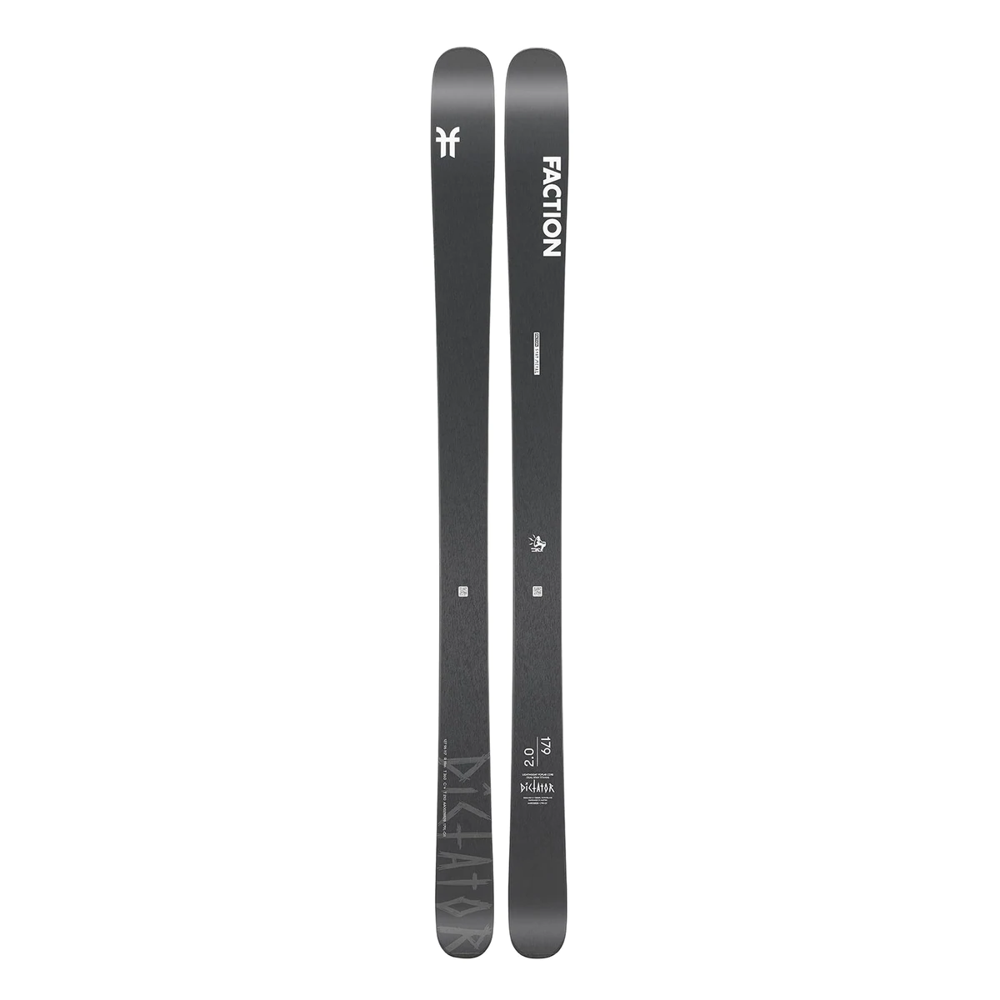

SKIGEEK

Dictator 2.0
127/96/117mm
6299kr
PRODUCT DESCRIPTION
The updated Dictator 2.0 turns the whole mountain into a freeride playground.
Dual Titanal layers and a lightweight, energetic woodcore blend power with lightweight
responsiveness so that you can trust your skis, whether you’re kick-turning the top of
that narrow couloir or arcing high speed turns through the crud below.
You'll love this
ski if: If you want to go fast but under control, If you want a super stable ski, If
you want a ski that is easy to turn in all conditions
AVAILABLE LENGTHS
163
171
179
187